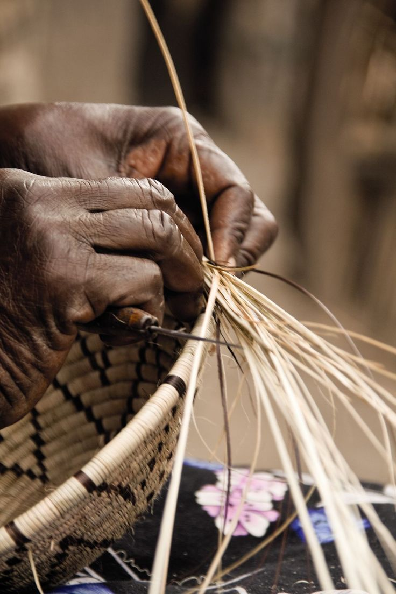

Sources of Inspiration

For me, art is more than just a craft; it’s a conversation with the world. I draw inspiration from the textures of everyday life the play of light on old walls, the rhythm of a bustling street, the quiet moments no one notices. Nature, music, and human emotions all feed my imagination, pushing me to explore colors, shapes, and stories that might otherwise go untold. What keeps me going is the belief that every stroke, every sketch, can evoke feeling, spark thought, or connect someone to an idea they didn’t know existed. Even on days when doubt creeps in, the simple joy of creating and the hope that my work touches someone is enough to keep my hands moving and my vision alive
John Sibanda Jackalas 1
Every piece I create starts with a feeling sometimes fleeting, sometimes deep rooted that I can’t put into words. I find inspiration in contrasts: light and shadow, chaos and calm, tradition and modernity. People, their stories, and the world around me are constant muses, reminding me that there’s beauty in the imperfect and the unexpected. What fuels me to keep going is the endless possibility of expression the chance to turn emotion into color, movement, and form. Art is my way of capturing moments that might otherwise be lost, and knowing that someone, somewhere, might see themselves reflected in my work keeps me reaching for the next creation
Xolile artworks Gabane
I’m inspired by the quiet moments that most people overlook the way sunlight drifts through a cracked window, the subtle gestures people make when they think no one’s watching, the rhythm of rain on a rooftop. These small, often unnoticed details become the heartbeat of my work. What keeps me going is the endless curiosity to see the world differently and the hope that my art can make someone pause, feel, or remember something they had forgotten. Every canvas, every sketch is a journey, and it’s the journey itself the exploration of color, texture, and emotion that drives me forward, day after day